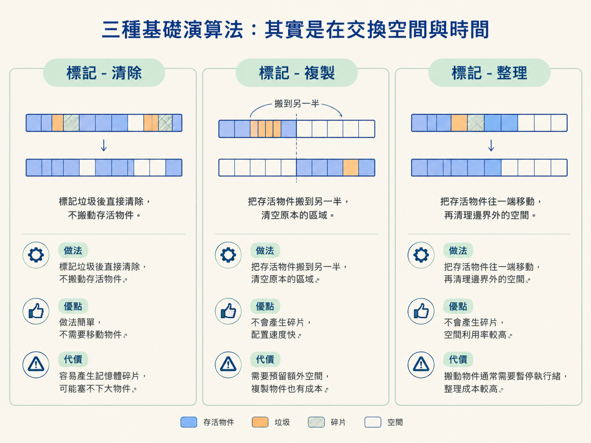
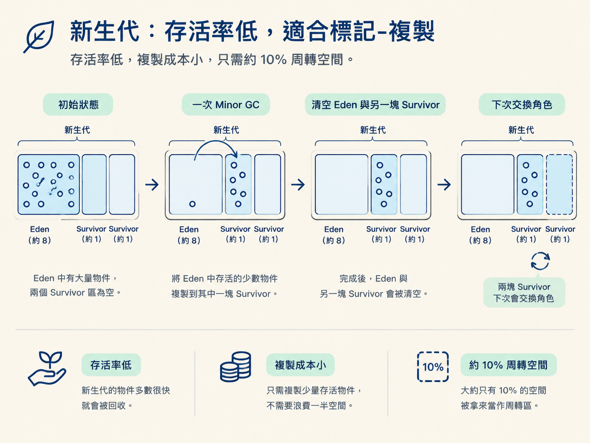
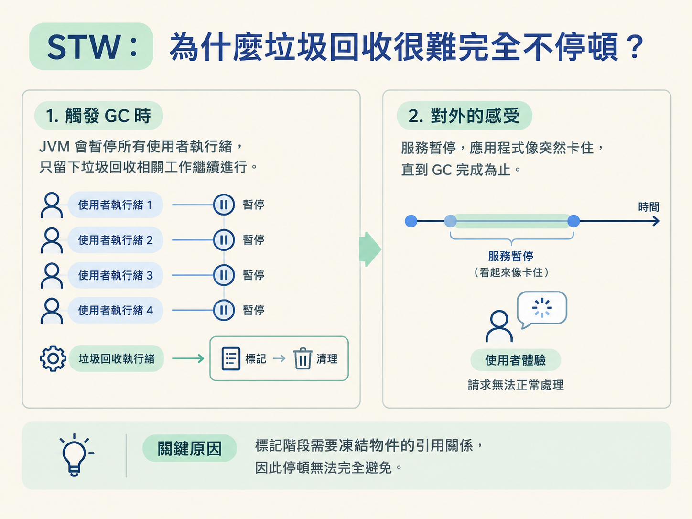
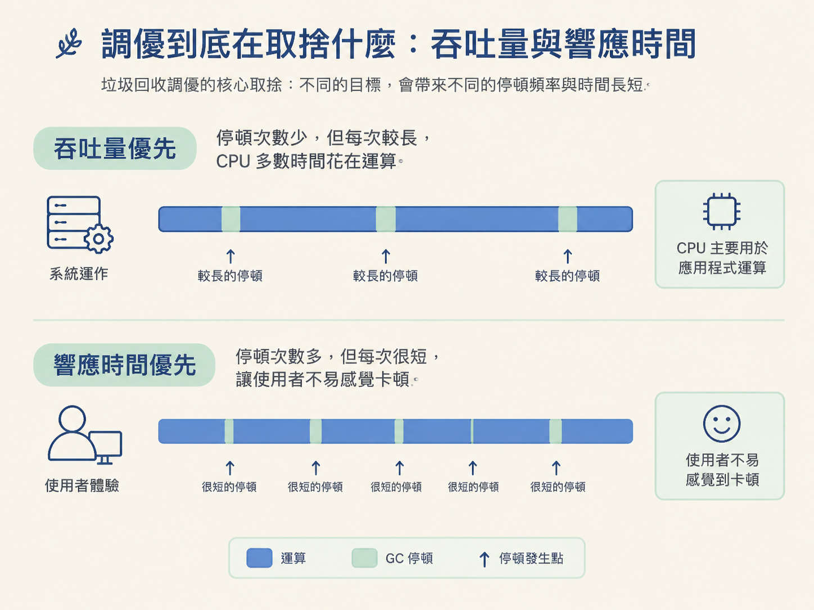

這一節會比較標記-清除、標記-複製、標記-整理三種演算法，理解它們各自解決什麼問題、又付出什麼代價。
你也會看到，為什麼 JVM 把複製演算法放在新生代，把清除或整理放在老年代；最後再弄清楚：為什麼 GC 發生時，服務總要先停一下。
上一節我們解決了「誰是垃圾」：JVM 會從 GC Roots 出發做可達性分析，從這些根物件走不到的物件，就會被判定為可以回收。
可是，判定出垃圾不等於垃圾已經消失。接下來還要決定：要怎麼把它們從記憶體裡清掉？如果直接刪除，會不會留下很多零碎空間？清理時又要不要暫停正在執行的服務？
清理方式會直接影響兩件事：記憶體是否容易產生碎片，以及應用程式要停頓多久。先把三種基礎演算法攤開比較，再看 JVM 如何用「分代收集」把它們放到適合的位置，最後回答 STW 為什麼很難完全避免。
垃圾回收沒有一種演算法能同時做到「不浪費空間、不產生碎片、速度又最快」。三種基本做法各有取捨，差別就像整理房間時，你可以直接把垃圾拿走、把東西搬到另一個房間，或是把物品重新排列整齊。
標記-清除（Mark-Sweep）是最直覺的做法：先把垃圾標記出來，再直接清除。它不需要搬動仍然存活的物件，因此實作相對簡單，也不必修改物件的位置。
問題是，清掉垃圾後，空間會變得零零碎碎。這就像一張紙被剪得千瘡百孔：空白面積加起來可能很大，但你想放進一個大物件時，卻找不到一塊連續的空間。結果是記憶體明明還有空間，卻可能因為沒有足夠大的連續區域而無法配置，甚至再度觸發 GC。
標記-複製（Mark-Copy）會把記憶體分成兩半，一次只使用其中一半。當這一半快滿時，就把還活著的物件全部搬到另一半，接著把原本的區域整塊清空。
這種做法不會留下碎片，而且新的物件只要沿著連續空間往後配置，也就是常說的「指標碰撞」，速度很快。不過代價是必須預留另一塊空間。若嚴格採用一比一的分法，等於準備兩份空間，實際上卻只使用其中一份。
標記-整理（Mark-Compact）則是先標記存活物件，再把它們往記憶體的一端搬，讓存活物件緊密排列，最後清掉邊界以外的空間。
它不像標記-清除那樣留下碎片，也不像標記-複製那樣必須長期保留一整塊備用空間。不過，物件搬動時可能改變記憶體位址，因此搬動與整理的過程通常需要暫停使用者執行緒，開銷也比較大。
| 演算法 | 做法 | 優點 | 代價 |
|---|---|---|---|
| 標記-清除 | 標記垃圾後直接清除，不搬動存活物件 | 做法簡單，不需要移動物件 | 容易產生記憶體碎片，可能塞不下大物件 |
| 標記-複製 | 把存活物件搬到另一半，清空原本的區域 | 不會產生碎片，配置速度快 | 需要預留額外空間，複製物件也有成本 |
| 標記-整理 | 把存活物件往一端移動，再清理邊界外的空間 | 不會產生碎片，空間利用率較高 | 搬動物件通常需要暫停執行緒，整理成本較高 |

JVM 不會只使用一種垃圾回收演算法，原因在於物件的生命週期差異很大。
大多數物件都是「朝生夕死」：建立後沒多久就不再使用。少數物件則會存活很久，甚至和整個程式一起存在。既然不同年齡的物件有不同的存活率，JVM 就把堆區分成不同世代，讓每一代使用更適合自己的回收方式，這就是分代收集。
新生代裡大多是剛建立不久的物件，回收時通常只有少量物件會繼續存活。這時使用複製演算法很划算，因為真正需要搬動的物件不多。
HotSpot 並不是把新生代嚴格切成兩半，而是分成一個 Eden 區與兩個 Survivor 區，比例約為 Eden : Survivor = 8:1。
物件通常先在 Eden 區建立。發生回收時，仍然存活的物件會被複製到其中一塊 Survivor 區，接著清空 Eden 與另一塊 Survivor 區。下一次回收時，兩塊 Survivor 會交換角色。
這樣做的好處是，不需要像一比一複製那樣浪費一半空間。大約只有 10% 的空間拿來當週轉區，對新生代這種存活率低的場景來說，空間成本小得多。

老年代的物件通常已經存活過多次回收，因此整體存活率比較高。這時如果使用標記-複製，就需要搬動大量物件，也必須準備足夠大的空白接收區，成本會變得很高。
所以老年代通常會使用標記-清除或標記-整理。例如 CMS 主要採用標記-清除，Parallel Old 與 G1 則涉及標記-整理的思路。
標記-清除的優點是可以少做一些搬動，適合重視停頓時間的場景；但它會留下碎片。標記-整理能維持較完整的連續空間，卻要付出搬動物件與整理記憶體的成本。
因此，這裡沒有單純的「哪一種一定比較好」。你要先知道自己比較害怕什麼：是記憶體碎片，還是較長的整理停頓。這個取捨在選擇垃圾收集器時還會再次出現。
不論採用哪一種演算法，回收的第一步通常都是「標記」。而要正確標記，就必須先確保物件之間的引用關係不會在掃描途中一直變動。
想像清潔工正在一個人潮密集的廣場上撿垃圾。如果清潔工一邊打掃，行人一邊丟新垃圾；更麻煩的是，有人還會把原本要丟掉的東西撿回來。清潔工不只可能永遠掃不乾淨，還可能把正在使用的東西誤當成垃圾。
在程式裡，這種錯誤可能導致錯誤回收，最後引發嚴重問題。因此，JVM 必須先把應用程式的記憶體狀態暫時定格，再掃描、處理幾個關鍵階段。這段暫停就是STW（Stop The World，全域暫停）。
STW 的意思是，GC 發生時，JVM 會暫停所有使用者執行緒，讓應用程式暫時無法繼續處理一般工作，只讓垃圾回收相關工作繼續跑。從使用者角度看，服務就像突然卡住了一樣。

這裡有一個常見誤解：所有收集器都會在某些階段觸發 STW。即使是強調低延遲的 CMS 或 G1，也不能完全消除停頓，只是把停頓縮短、切開，或限制在少數關鍵階段，例如初始標記與最終標記。
其中，Full GC 通常特別危險，因為它往往需要處理整個堆區，停頓時間也可能更長。嚴重時，服務甚至可能幾十秒、幾分鐘都無法正常回應。
既然 STW 很難完全消失，垃圾回收調優的目標就不是「讓停頓變成零」，而是根據服務特性，把停頓控制在可以接受的範圍。
這會牽涉到一個核心取捨：你更在意吞吐量，還是回應時間？
吞吐量優先，代表你寧願讓程式一次停久一點，也希望少停幾次，讓 CPU 把更多時間花在實際計算，而不是反覆做垃圾回收。這類策略比較適合後台批次運算與報表處理。
回應時間優先則相反：你寧願多停幾次，也希望每次停頓都很短，讓使用者不容易感覺到卡頓。Web 服務通常更在意這種體驗。

這個取捨沒有放諸四海皆準的答案，但它會直接影響你要選擇哪一種垃圾收集器，也是下一節比較 Serial、Parallel、CMS、G1 與 ZGC 時的主線。
三種清理演算法，其實是在空間與時間之間做交換：標記-清除不搬動物件，但容易留下碎片；標記-複製沒有碎片、配置速度快，卻需要額外空間並付出複製成本；標記-整理能兼顧連續空間與空間利用率，但搬動物件時可能帶來較長停頓。分代收集利用物件生命週期的差異，將複製演算法放在存活率低的新生代（Eden : Survivor = 8:1），再把清除或整理放在存活率高的老年代。至於 STW，則是因為標記時需要凍結物件引用關係，所以任何收集器都只能降低停頓，而很難完全消除停頓。調優的重點，最終是在吞吐量與回應時間之間做出適合服務的選擇。
現在你已經知道垃圾怎麼被清掉，也知道為什麼不同世代要搭配不同演算法。接下來可以繼續追問：各種垃圾收集器分別站在吞吐量與低延遲這條光譜的哪一端？下一節會把 Serial、Parallel、CMS、G1、ZGC 排在一起比較，並用三色標記解釋 CMS 與 G1 為什麼會有不同的行為。